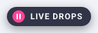
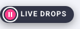
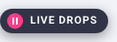
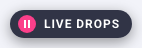

Ticker
The live drops strip under the header: the drops newest first in one row of feed tiles running the strip's whole width, a new one swinging in at the front, and a chip in its top right corner, Live drops with its pulsing dot. Running, the pause shows on hover and focus in the dot's place; paused, the chip's control says Resume and no new drop arrives. Everything on this page is drawn by design/system/components/ticker.css through index.css, the same file a screen will load.
Anatomy
- Glock-18Water ElementalIronboundquill bot
- USP-SKill ConfirmedColdfrontmira_cs
- AWPNeo-NoirNightfallduskrunner
- SG 553CyrexWarsteelghostline bot


It holds one molecule and places it, and redraws nothing of it: the Feed tile (level 2), one in each .ticker__i, which brings its own atoms (Media slot, Avatar, Icon) and its own hover, focus and rare drop. A rare drop's moving mark is the Rare mark (level 1), laid by the product's script, not by the ticker. The ticker writes no rule on the tiles; it sets their row, their gap and the clip. Everything else is the ticker's own.
| Part | Class or element | What to change there |
|---|---|---|
| The strip | .ticker with role="region" | the page's ground, --size-ticker tall from 600px; its own geometry (--ticker-*) |
| Chip | .ticker__head | the dark pill in the top right corner, blurred over the drops behind it |
| Label | .ticker__lbl | Live drops, small capitals, the pink dot before it with its pulsing halo |
| Pause | .ticker__pause | an 18px pink round with two bars, a 40px press; its words, Pause or Resume, are for a screen reader. Outside the button family (inventory.md) |
| Run | .ticker__clip, .ticker__run, .ticker__i | the drops in one row, 6px apart, clipped at the strip's ends; each item holds a Feed tile |
| Rare drops | template.ticker__rare | three rare drops the script lays in turn; inert markup until then |
Variants and sizes
One form. Its sizes follow the window, in three steps; this page shows the one its window has, and the page at 360px shows the phone's. Sizes are read from the render.
- From 900px: 120px tall (
--size-ticker), the run 8px from the start, the chip 16px off the corner. - Under 900px: the run 16px from the start and 8px below the drops.
- Under 600px: as tall as its drops, 6px above and below, the chip 10px off the corner.
- Arrival: a new drop swings in at the front (
.is-new, set bykit.json its arrival and taken off at its end); the row slides one place on its own. Reduced motion stills the swing.
Read from the render: the strip , the chip , the pause , the gap between drops .
A new drop arriving, as the class kit.js sets:
When to use
Under the header on every coloured screen but Responsible play, once per page: the live proof that drops are happening now, one at a time, newest first (design principle 1), and the thing that keeps the platform alive (principle 2). The pause is there so a person can stop the motion and read; reduced motion starts it paused. The drops on this page are samples (D-124).
Rule and anti-rule
Use it
Directly under the header, the strip's whole width, one tile per drop. A new drop enters at the front; nothing arrives while the strip is held, pointed at or holds focus.
Take another component
The best drops of one case, with their value and winner, are Recent drops. What a case can pay is shown as Drop cards. A count of what has happened here is a Footer counter. A moment that needs reading, not watching, is a Status notice.
States
Live at rest, on this page's theme: point at the strip to see the pause take the dot's place, reach the pause with Tab. The page does not run the product's script, so nothing arrives and a press on the pause does not hold the strip; the held strip below is the class kit.js sets, .is-held, with the words it writes, Resume.
Running
Paused (.is-held, set by kit.js)
Snapshots of the chip, dark on the left and light on the right, taken with reduced motion. The base set is shot once on the pause; after it, only a named difference.

--ticker-chip-lit, --bg-mark-on-plate, filter: brightness(1.1)
--line-focus-on-plate
--ticker-chip-lit, --bg-mark-on-plate
--ticker-chip-lit, --bg-mark-on-plate- The same answer, said once: the pause has no press look of its own (kit.css draws none). The chip keeps its dark in both themes, so its words, its round and its ring do not change with the theme.
- The play mark: kit.css also draws a play triangle on
.ticker__pause[aria-pressed="true"]. Since D-254 the script sets no pressed state (the control says what a press does, Pause or Resume), so no screen shows the triangle; the rule is carried as kit.css holds it and is deleted at step 6 with the reconcile's third list (D-266, Q5). - The halo's pulse plays the keyframes
ticker-live, which the Steam state names too; they are declared once, at the end ofticker.css, the first file that reads them. Reduced motion hides the halo. - A touch screen (
hover: none) shows the pause at all times and no dot. The tiles keep their own states, on the Feed tile's page. No disabled look.
node design/kit/tools/shoot-states.js http://localhost:8765/ ticker # re-shoot after a change to ticker.css or its tokens node design/kit/tools/shoot-states.js http://localhost:8765/ ticker --check # step 9: fails if a snapshot drifted
In the code
| Token | Kind | Dark | Light |
|---|
Read live from tokens.css. One component token, --ticker-chip-lit, the same in both themes (D-266, Q3). The chip is one of the shell's dark plates and stays dark in both themes (D-266, Q3): its words, its dot, its pause and its ring read on-plate roles, the dot and the pause --ticker-chip-lit in the place of --bg-lit, which turned to the act's pink in the light theme. The strip under the chip stands on the page's ground (--bg-page, --text-base) and turns with the theme, and the Feed tiles it holds keep their own look, so in the light theme they turn to paper. The chip's dark is a navy at .82 over a blur, so over the paper it reads a lighter navy than over the dark page; that is read again at step 7. Three colours read in this block only stay primitives until step 9 (tokens-audit.md): the chip's dark and its lift, and the halo. The block's own geometry is its --ticker-* custom properties, each with its origin.
File: design/system/components/ticker.css, loaded by design/system/index.css in the organisms' group.
<div class="ticker" role="region" aria-label="Live drops">
<div class="ticker__head"><button class="ticker__pause" type="button">Pause</button><span class="ticker__lbl">Live drops</span></div>
<div class="ticker__clip"><ul class="ticker__run">
<li class="ticker__i"><div class="feed-tile feed-tile--covert" data-chance="0.64">...</div></li>
</ul><template class="ticker__rare">...</template></div>
</div>
Stands on: Home, the case screen, the catalogue, Deposit, My items, Provably fair, Sign in. Until step 8 those screens still read kit.css. Where a page places it (.shell > .ticker, its grid area) is the shell's rule and stays in kit.css until step 6.